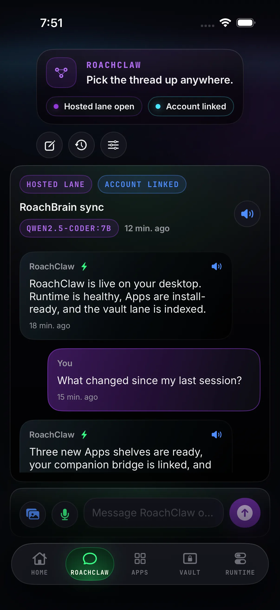
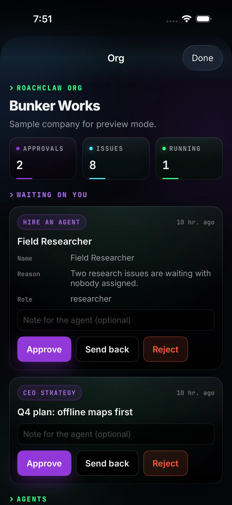
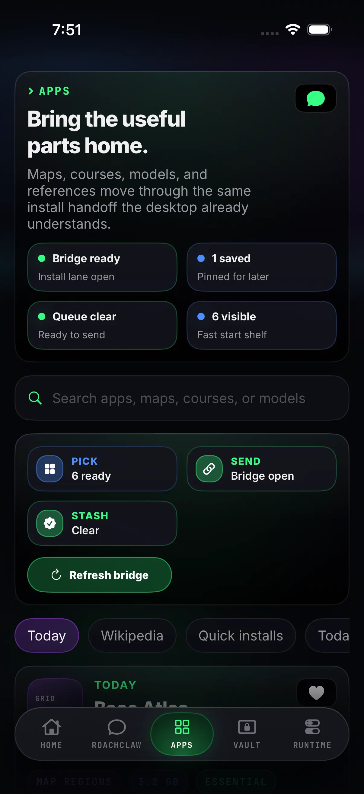
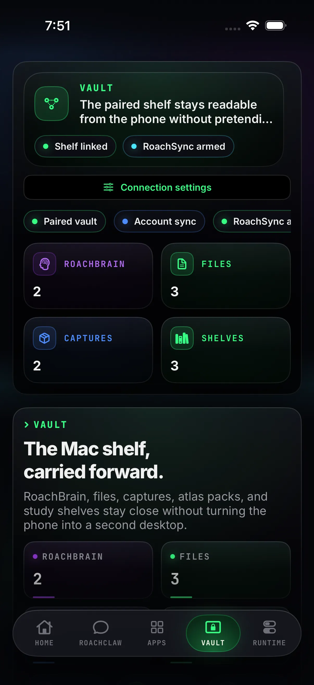
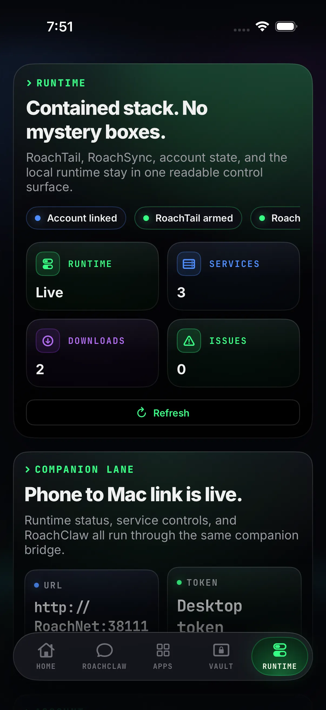

Home · new
Your Mac's vital signs at a glance.
Which brain is loaded, what's on the shelves, whether RoachTail is up, and what your agents are waiting on. One look before you put the phone back.
RoachNet iOS 0.2.0 · iPhone & iPad
Your Mac's RoachClaw, library, vault and agent company on your iPhone or iPad. The Mac does the heavy lifting; the phone keeps you in the loop, even when the Mac is asleep.
An unsigned IPA that SideStore or AltStore signs with your own Apple ID. No App Store account, no RoachNet account, nobody in the middle.
Screens
Six tabs and one sheet, each doing one job. Pocket-sized, not toy-sized.
Home · new
Which brain is loaded, what's on the shelves, whether RoachTail is up, and what your agents are waiting on. One look before you put the phone back.

RoachClaw
Type, dictate or attach a photo. The reply comes from the model on your Mac, and the thread is there next time you open the laptop.

Org · with RoachNet 1.1
RoachClaw Org asks before it hires an agent or changes the plan. Approve, send it back with a note, or say no. Pause an agent that's wandering.

Apps
Pick maps, courses, models and packs; they install on the Mac as soon as it's reachable. If the web catalog is offline, the shelf you last loaded stays put.

Vault
Maps, courses, saved pages, media and documents, readable on the phone and still there after the Mac drops off.

Runtime
Services, downloads, RoachTail, RoachSync and RoachAtlas GPS, with the controls to start, stop or retry right there.
What's new in 0.2.0
0.2.0 is built for RoachNet 1.0.6 on the Mac, and ready for the agent company coming in 1.1.
The app
It looks and talks like RoachNet on the Mac, so there's nothing to relearn. It opens on what you last saw and stays useful when the Mac goes quiet.
Home tab
RoachClaw Org
Pause and resume agents. Join an Org from an invite link. Needs RoachNet 1.1 on the Mac.
RoachTail
Cut one off without touching the rest. Works with the 1.0.6 pairing flow.
New look
Purple for actions, green for what's live. The same language as the Mac and this site.
Steadier chat
And a paired phone never slips back into sample data.
RoachAtlas GPS
Only while the app is open, and only when you say so.
Useful offline
When the Mac is out of reach, recent chats, files and status stay on the phone until it comes back.
Nobody in the middle
No RoachNet server, no account, no relay.
Install
Add the RoachNet source once and updates show up on their own, or grab the IPA directly. Same build either way.
SideStore
The source keeps you on the latest build without hunting for files. The IPA is there when you want the file itself.
Add the RoachNet source in SideStore, or download the IPA and share it to SideStore to install.
Open this page on your iPhone or iPad, or AirDrop the IPA first.
AltStore
The same source works in AltStore and always points at the current IPA.
Add the same RoachNet source in AltStore, or download the IPA and import it from Files.
Open this page on your iPhone or iPad, or AirDrop the IPA first.
Pairing
Your Mac keeps the models, the vault and the installs. The phone stays fast because it isn't trying to be a second desktop.
Connecting
RoachNet on the Mac shows a QR code and a pair link. Either one fills in the details; press Pair with RoachTail and the phone gets its own key.
Alias
https://roachnet.roachtail is the front door.Or just scan the code on your Mac. Either way this device gets its own key.
Fallback
Recent chats, files and status stay on the phone until the Mac reappears.